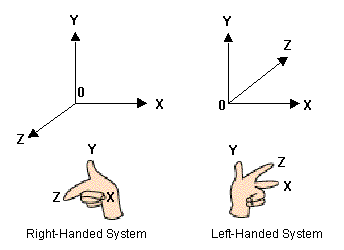

A three-dimensional coordinate system can be right-handed or left-handed as illustrated here:

The Z-axis direction compared to the X-axis and Y-axis directions, is different. In the right-handed system, the Z axis points out, toward the viewer. In the left-handed coordinate system, the Z axis points in, away from the viewer.
N64 uses the right-handed coordinate system as do most other systems. Even though it would seem more natural to use the left-handed system because you could think of it superimposed on a TV screen, the right-handed system is used because it fits with the standard mathematical convention.
Nintendo® Confidential
Copyright © 1999
Nintendo of America Inc. All Rights Reserved
Nintendo and N64 are registered trademarks of Nintendo
Last Updated March, 1999